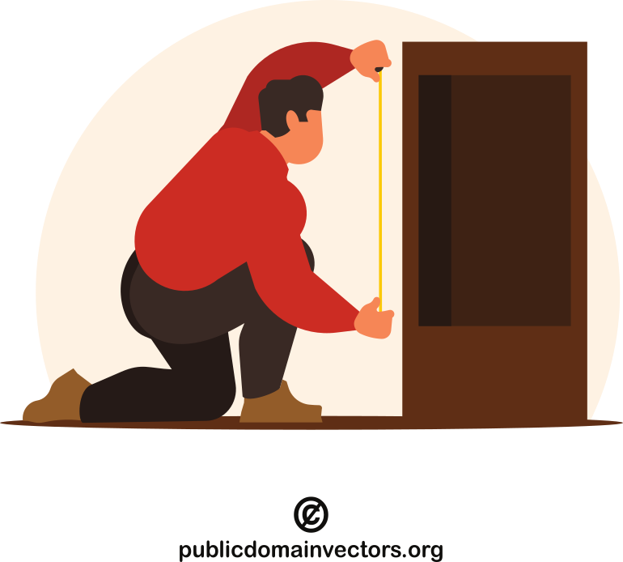

agile
working software over comprehensive documentation
software craftmanship
not only working software, but also well-crafted software
well-crafted
- high quality
- well-designed
- validated and verified
- tested
- code is clean, easy to understand, maintain
code smell
a code smell is a surface indication that usually corresponds to a deeper problem
– Martin Flower (Fowler, 2006)
software rot is the degradation, deterioration, or loss of the use or performance of software over time (Wikipedia contributors, 2024)
requirement smell: signs in the requirements that are not necessarily wrong but could be problematic (Femmer et al., 2017)
clean clode violations as code smells
- long method
- long parameter list
- naming
- notation in names
- inconsistent names
- uncommunicative names
- comments
- large class
- possibly do more than one thing
- a function / class does more than one thing
source: (Atwood, 2006)
some code smells
- duplicated code
- Don’t Repeat Yourself! (a.k.a., DRY principle) (Venners, 2003)
- speculative generality
- do not generalize the code to solve a potential future problem
- You aren’t gonna need it (YAGNI)
- focus on today’s problem
- dead code
- e.g., a function that is never called
- editors denote it
- in Go unused variable is not a warning, but an error
- temporary field
- “Watch out for objects that contain a lot of optional or unnecessary fields. If you’re passing an object as a parameter to a method, make sure that you’re using all of it and not cherry-picking single fields.” (Atwood, 2006)
source: (Atwood, 2006)
conditional complexity
if a and b:
do_something()
if a or b:
do_something()
if not (a or (b and not c) and (d or not f)):
do_something()
- hard to understand
- even if it is tested and documented
conditional complexity
if is_pressure_low() and is_temperature_high():
do_something()
if is_pressure_low() or is_temperature_high():
do_something()
if not (
is_pressure_low()
or (is_temperature_high() and not is_humidity_low())
and (is_fall() or not is_raining())
):
do_something()
- hard to understand, even if it is tested and documented
- use nested conditions instead
class-based smells: alternative classes with different interfaces
If two classes are similar on the inside, but different on the outside, perhaps they can be modified to share a common interface (Atwood, 2006).
class-based smells: data class???
Avoid classes that passively store data. Classes should contain data and methods to operate on that data, too (Atwood, 2006).
- Kotlin: Data classes
- Python: PEP 557 – Data Classes
- Ruby: class Data

class-based smells: data clumps
If you always see the same data hanging around together, maybe it belongs together. Consider rolling the related data up into a larger class (Atwood, 2006).
class-based smells: refused bequest
If you inherit from a class, but never use any of the inherited functionality, should you really be using inheritance? (Atwood, 2006)

class-based smells: indecent exposure
Beware of classes that unnecessarily expose their internals. […] You should have a compelling reason for every item you make public. If you don’t, hide it (Atwood, 2006).
OOP principle: abstraction
- hiding the complex reality while exposing only the necessary parts
- allows to focus on interactions at a higher level without needing to understand the details of the implementation
- achieved through abstract classes and interfaces, which define a contract for what methods an object must implement without specifying how they should be implemented
class-based smells: feature envy

Methods that make extensive use of another class may belong in another class. Consider moving this method to the class it is so envious of.
– Jeff Atwood (Atwood, 2006)
more code smells
this section is based on the book Clean Code (chapter 17) by Robert C. Martin (Martin, 2009)
with own examples

{kind=link}
comment related smells
1. obsolete comment
version n-1 (OOP)
# increase class attribute
def increase(self, by):
self.foo += by
version n (FP)
# increase class attribute
def increase(what, by):
return what + by
these are actually noise comments, so they are bad in the first place
comment related smells
2. redundant comment
# creates an empty dataframe
def create_empty_dataframe(start_week, end_week):
redundant as it does not give new information, a form of noise comment
comment related smells
3. commented-out code
def increase(what, by):
# print(what, by)
return what + by
not needed, just remove it
class Something:
foo = 0
def increase(self, by):
self.foo += by
def decrease(self, by):
self.foo -= by
# def mutiply(self, by):
# self.foo *= by
the version tracker will preserve it, if you might meed it sometime in the future
magic numbers
magic number is an unexplained constant in the code
def calculate_circle_area(r: float) -> float:
return r * r * 3.141592
PI = 3.141592
def calculate_circle_area(r: float) -> float:
return r * r * PI
import math
def calculate_circle_area(r: float) -> float:
return r * r * math.pi
encapsulate boundary conditions
if level + 1 < length:
do_somthing(foo, bar, level + 1)
next_level = level + 1
if next_level < length:
do_somthing(foo, bar, next_level)
also increases consistency, the condition needs to be adjusted in one place
denoting blocks
for (i = 0; i < 10; i++) {
console.log(i);
}
for (i = 0; i < 10; i++)
console.log(i);
var a = 0;
for (i = 0; i < 10; i++)
a++;
console.log(i);
for i in range(10):
print(i)
a = 0
for i in range(10):
a += 1
print(i)
package main
import (
"fmt"
)
func main() {
for i:=0; i<10; i++ {
fmt.Println(i)
}
}
fn main() { for i in 0..9 { println!("{}", i); } }
what could go wrong?
parts from sslKeyExchange.c
if ((err = ReadyHash(&SSLHashSHA1, &hashCtx)) != 0)
goto fail;
if ((err = SSLHashSHA1.update(&hashCtx, &clientRandom)) != 0)
goto fail;
if ((err = SSLHashSHA1.update(&hashCtx, &serverRandom)) != 0)
goto fail;
if ((err = SSLHashSHA1.update(&hashCtx, &signedParams)) != 0)
goto fail;
goto fail;
if ((err = SSLHashSHA1.final(&hashCtx, &hashOut)) != 0)
goto fail;
fail:
SSLFreeBuffer(&signedHashes);
SSLFreeBuffer(&hashCtx);
return err;
more about Apple’s “goto fail” fiasco (2014): (Wheeler, 2014), (Migues, 2014)
false blame on goto, could be prevented by review and testing
how to measure code quality?
it is hard to objectively measure the quality of code
- number of source lines of code (SLOC)
- more code, more (potential) issues
- aligns well with code style guides
- Halstead metrics
- cyclomatic complexity
- maintainability index
- test coverage (later)

Halstead metrics
Halstead’s goal was to identify measurable properties of software, and the relations between them (Radon documentation, n.d.).
statistically computed numbers:
- $\eta_1$ = the number of distinct operators
- $\eta_2$ = the number of distinct operands
- $N_1$ = the total number of operators
- $N_2$ = the total number of operands
some of the measures:
- program vocabulary: $\eta = \eta_1 + \eta_2$
- program length: $N = N_1 + N_2$
- calculated program length: $\widehat{N} = \eta_1 log_2{\eta_1} + \eta2 log_2{\eta_2}$
- volume: $V = N log_2{\eta}$
- difficulty: $D = \frac{\eta_1}{2} \cdot \frac{N_2}{\eta_2}$
- effort: $E = D \cdot V$
cyclomatic comlexity
- developed by Thomas J. McCabe in 1976
- quantitative measure of the number of linearly independent paths through the source code
- computed using the control-flow graph of the program
defined as:
$$ M = E - N + 2P $$
- E: the number of edges of the graph
- N: the number of nodes of the graph
- P: the number of connected components
- for a single method, P always equals 1
cyclomatic comlexity – example
def calculate_progress(
finished: int,
total: int,
as_percentage: bool
) -> float:
progress = finished / total
if as_percentage:
return progress * 100
else:
return progress
activity diagram

control flow

$$ CC = E - N + 2 $$ $$ CC = 4 - 4 + 2 $$ $$ CC = 2 $$
cyclomatic comlexity – 2nd example
def calculate_progress(
finished: int,
total: int,
as_percentage: bool,
foo: bool
) -> float:
progress = finished / total
if as_percentage and foo:
return progress * 100
else:
return progress
activity diagram

control flow

$$ CC = E - N + 2 $$ $$ CC = 7 - 6 + 2 $$ $$ CC = 3 $$
Python statements’ effects on cyclomatic complexity
| construct | effect | reasoning |
|---|---|---|
| if | +1 | An if statement is a single decision. |
| elif | +1 | The elif statement adds another decision. |
| else | +0 | The else statement does not cause a new decision. The decision is at the if. |
| for | +1 | There is a decision at the start of the loop. |
| while | +1 | There is a decision at the while statement. |
| except | +1 | Each except branch adds a new conditional path of execution. |
| finally | +0 | The finally block is unconditionally executed. |
| with | +1 | The with statement roughly corresponds to a try/except block. |
| boolean operator | +1 | Every boolean operator (and, or) adds a decision point. |
source: Radon documentation (Radon documentation, n.d.)
interpretation of cyclomatic complexity – Radon
| CC score | rank | risk |
|---|---|---|
| 1 - 5 | A | low - simple block |
| 6 - 10 | B | low - well structured and stable block |
| 11 - 20 | C | moderate - slightly complex block |
| 21 - 30 | D | more than moderate - more complex block |
| 31 - 40 | E | high - complex block, alarming |
| 41+ | F | very high - error-prone, unstable block |
source: Radon documentation (Radon documentation, n.d.)
maintainability index
original (Coleman et al., 1994):
$$ MI = 171 - 5.2 \ln{V} - 0.23G - 16.2\ln{L} $$
Visual Studio derivate:
$$ MI = max\left[0,100 \frac{171 - 5.2 \ln{V} - 0.23G - 16.2\ln{L}}{171}\right] $$
- V: the Halstead volume
- G: the total cyclomatic complexity
- L: the number of source lines of code
| score | maintainability |
|---|---|
| 0-10 | low |
| 10-20 | moderate |
| 20+ | high |
Visual Studio
| score | maintainability |
|---|---|
| 0–10 | low |
| 10–20 | moderate |
| 20–30 | good |
| 30–40 | very good |
| 40–100 | excellent |
based on (Sharma, 2024)
issues: ease of computation, language independence, understandability, explainability (Heitlager et al., 2007)
read more in Think Twice Before Using the “Maintainability Index” (Deursen, 2014)
maintainability index – example
def calculate_progress(finished: int, total: int, as_percentage: bool) -> float:
progress = finished / total
if as_percentage:
return progress * 100
else:
return progress
def calculate_progress_2(
finished: int, total: int, as_percentage: bool, foo: bool
) -> float:
progress = finished / total
if as_percentage and foo:
return progress * 100
else:
return progress
- maintainability index for a script containing the code above is 63.71
- calculated with Radon
go report
- gofmt: style guide
- go_vet: reports suspicious constructs (Go specific)
- ineffassign: detects ineffectual assignments in Go code
- gocyclo: cyclomatic complexity
- license: checks whether your project has a LICENSE file
- misspell: finds commonly misspelled English words
| score | grade |
|---|---|
| >90 |  |
| >80 |  |
| >70 |  |
| >60 |  |
| >50 |  |
| >40 |  |
| <=40 |  |
code chunk permanence in a codebase

- there was no need to change it, presumably it was written well in the first place
- multiple changes in a short period indicate problems during software development (Nagappan et al., 2010)
WTF per minute

references
Atwood, J. (2006). Code smells. https://blog.codinghorror.com/code-smells/ .
Coleman, D., Ash, D., Lowther, B., & Oman, P. (1994). Using metrics to evaluate software system maintainability. Computer, 27(8), 44–49.
Deursen, A. van. (2014). Think twice before using the “maintainability index”. https://avandeursen.com/2014/08/29/think-twice-before-using-the-maintainability-index/ .
Femmer, H., Fernández, D. M., Wagner, S., & Eder, S. (2017). Rapid quality assurance with requirements smells. Journal of Systems and Software, 123, 190–213.
Fowler, M. (2006). Code smell. https://martinfowler.com/bliki/CodeSmell.html .
Heitlager, I., Kuipers, T., & Visser, J. (2007). A practical model for measuring maintainability. 6th International Conference on the Quality of Information and Communications Technology (QUATIC 2007), 30–39.
Martin, R. C. (2009). Clean code: A handbook of agile software craftsmanship. Pearson Education.
Migues, S. (2014). Understanding the apple “goto fail;” vulnerability. https://www.blackduck.com/blog/understanding-apple-goto-fail-vulnerability-2.html .
Nagappan, N., Zeller, A., Zimmermann, T., Herzig, K., & Murphy, B. (2010). Change bursts as defect predictors. 2010 IEEE 21st International Symposium on Software Reliability Engineering, 309–318.
Radon documentation. (n.d.). https://radon.readthedocs.io/en/latest/intro.html .
Sharma, V. (2024). Analyzing software code — maintainability index. https://mvineetsharma.medium.com/analyzing-software-code-maintainability-index-9765896c80f9 .
Venners, B. (2003). Orthogonality and the DRY principle. https://www.artima.com/articles/orthogonality-and-the-dry-principle .
Wheeler, D. A. (2014). The apple goto fail vulnerability: Lessons learned. https://dwheeler.com/essays/apple-goto-fail.html .
Wikipedia contributors. (2024). Software rot — Wikipedia, the free encyclopedia. https://en.wikipedia.org/w/index.php?title=Software_rot&oldid=1236668404 .